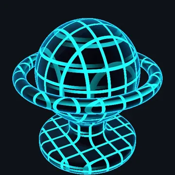
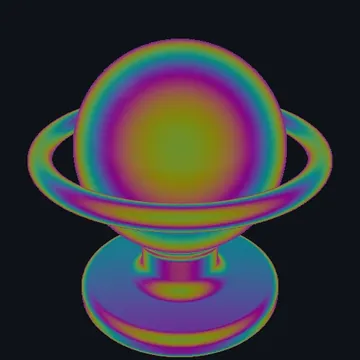
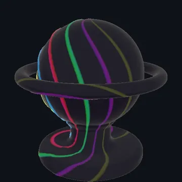
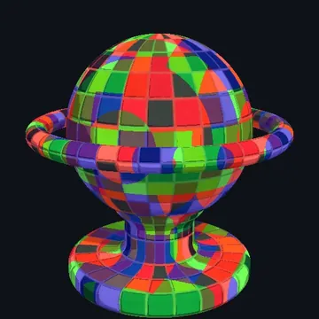
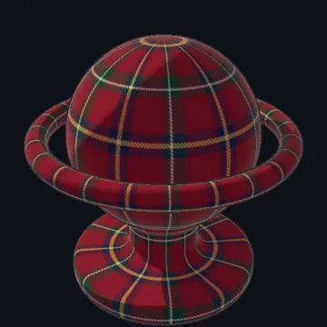

FireRatShader
One uber shader for Unity with full Built-in and URP parity. Toon and PBR lighting, AudioLink visualizers, raymarched 3D fractals, shell fur, dissolves and glitches, all in one master shader per pipeline.
- 14 surface styles and 5 lighting models
- AudioLink spectrum, waveform and emission
- Material Lock strips unused passes and variants
- Inspector in 14 languages

Cyber Grid
Iridescence
AudioLink Ripple Hammered Gold
Glitch Effects
Toon ShadingHover a tile to play it. Captured from the demo scenes.
About Me
I'm a programmer at heart, with a strong interest in the ever-evolving world of VR.
I'm on a path to becoming a creator of immersive experiences, focusing on building practical tools and utilities.
You can see some of my work below.
Projects & Creations
JSON Against Humanity
An actively maintained, up-to-date Cards Against Humanity card database and spreadsheet dataset in clean plaintext, CSV, and optimized JSON formats. Features the latest official sets and community-created custom packs.
CAH Serverless API
A serverless, database-free Cards Against Humanity REST API powered by the JSON Against Humanity dataset. Query packs, white/black cards, and random hands with in-memory caching and zero setup overhead.
Altspace & Banter Games
A collection of real-time multiplayer 3D games built for AltspaceVR (altvr.app, the new Altspace) and BanterVR spaces. Easily embed Checkers, Chess, Connect 4, Go, UNO, Blackjack, and more into virtual worlds using a snippet or script tag.
shorter
A powerful, self-hostable link shortener and text sharing service. Supports multi-domain operations, custom short-keys, expiration times, and password protection.
RenderVerify
An event registration and verification system. Features a secure verification API, unique user codes, and a comprehensive administrative dashboard for entry management.
Fire-V-Player
A collaborative YouTube and karaoke player for Altspace (altvr.app) and Banter VR worlds. Add it as the fire-v-player snippet, then vote on queues and watch videos together in real-time sync.
Banter Remote Logger
A real-time logging solution for Banter VR. Captures console.log errors inside VR spaces and forwards them to a remote WebSocket server, simplifying standalone device debugging.
Holograms Against Humanity
A multiplayer Cards Against Humanity table game for AltspaceVR and BanterVR spaces. Runs entirely client-side using shared space state properties, supporting up to 10 players and 70+ card deck expansions.
FireMaze
A Blender 4.2+ extension for generating perfect tile-based 3D mazes using DFS iterative backtracking. Supports Thin and Cube wall modes, custom meshes, and auto-mapping of UV coordinates.
PoseConverter
An enhanced Blender addon for copying poses between armatures and baking them as new rest poses (e.g. T-pose to A-pose) while preserving shape keys and matching missing bones.
Connect With Me
I am always open to new ideas, project collaborations, or developer discussions. Reach out or support my work through the channels below.